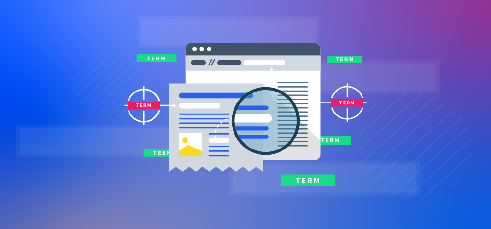

I build backend systems that serve millions — identity platforms at Workday, voice AI at LivePerson, serverless pipelines at Black Knight. I care about resilient architecture, clean APIs, and making other engineers faster.
Building distributed systems at scale across identity, voice, and fintech.
Workday (Evisort)
Owning the identity platform post-acquisition — SCIM provisioning, unified OIDC auth, single logout, per-tenant schema isolation, and a resilient CPS publish queue with exponential backoff retries. Serving thousands of auth requests/min across Workday and Evisort.
user_management, authentication_provider) to decouple tenant mapping from login enforcement./ping and /health endpoints.LivePerson Inc
Built Voice AI platform end-to-end — media microservices, SIP APIs, and Kafka schema service. Cut latency 35% and scaled concurrent calls to 700.
Black Knight Inc
Architected serverless APIs on AWS — improved OCR accuracy to 89%, cut production costs 20%, and automated 80% of manual transaction retries.
Architected and developed APIs for Input & Output Handler Services on the AIVA (Artificial Intelligence Virtual Assistant) team.
Bharati Vidyapeeth's College of Engineering
Published two research papers on cloud security steganography and NLP-based clinical decision support systems.
CSE Department under Dr. Rachna Jain — Published two research papers.
TATA Computer Management Corp
Built a full-stack web app with Flask and MongoDB — drove 45% sales increase and 30% faster query performance via ETL optimization.
Bharati Vidyapeeth's College of Engineering
Developed an Android video player with gesture controls, custom UI, and third-party SDK integrations.
Technologies I work with daily and at depth.
Tempe, Arizona, USA
M.S. Software Engineering
Delhi, India
B.Tech Computer Science
Delhi, India
Associate — Electronics & Communications
Spark and Hadoop Developer
Python Programming (PCAP-31-02)
Database SQL (1Z0-071)
Google Cloud Platform
Hover to flip and see details.
Jan 2020 – Apr 2020
Expanded RosterData from NHL-only to 4-league coverage (NHL, SHL, Liiga, KHL) with cross-league player comparison.

Mar 2020 – Apr 2020
End-to-end ML pipeline for financial document classification — 98% accuracy, deployed as a REST API on GCP.
Aug 2019 – Nov 2019
Rigorous ML classification on clinical data with K-fold validation — 85% accuracy, plus unsupervised meal clustering.
Aug 2019 – Nov 2019
Interactive math portal with drag-and-drop, built by a team of 5 using Agile/Scrum and formal design patterns.
Jan 2019 – May 2019
Custom OOP language with full compilation pipeline — grammar spec, tokenizer, parser, and semantic analyzer.
this, constructors, method dispatch).Mar 2017 – Jun 2017
8-node Hadoop cluster processing 300M+ YouTube video logs with MapReduce and cross-version benchmarking.